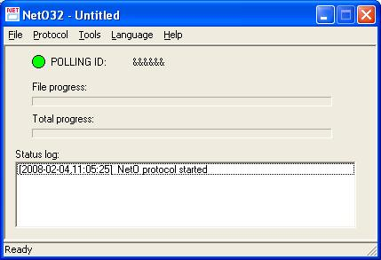
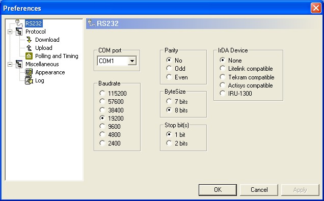

| Description |
 The NetO32 application is a Windows 32bit implementation of the NetO protocol. NetO is the standard protocol that is implemented on the whole Opticon hand held terminal range. With this protocol an Opticon Terminal can send or receive files from a host device (PC). The host (PC) is the device that takes the initiative by sending a small poll command to the terminal(s) with a specific ID. The terminal can respond if the poll command ID matches the ID of the terminal or if the poll command sends the broadcast ID. When the terminal responds to the Poll command it will tell the host that it wants to send or receive files. The host will then start the up or download if that is possible. The get a safe transfer of the file some check are included in the transfer to see if anything goes wrong. When the transfer of the file is completed a new file will be on the terminal or on the host. |
| Options |
Press on the different areas of the screenshot below to browse through the configration options of NetO32.  |